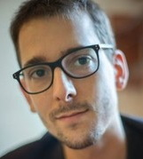

Alexis Garnier
Développeur
WISY, Tulle
A Cogolin, je m‘ennuyais. L’immobilier, ce n’était pas pour moi.
J’avais envie de changer et de me lancer dans quelque chose que
j’aimerais vraiment. C’est un bilan de compétences qui a confirmé
mes aspirations pour le développement web. J’ai intégré la formation
de Brive en 2018. Je n’ai jamais travaillé dans l’informatique mais
c’était toute ma passion. Avec 35 heures de formation par semaine, 6
mois sur site et 2 mois en entreprise, je peux dire qu’on apprend
beaucoup. Notre groupe a bien fonctionné avec de l’écoute et de
l’entraide. La compétition, c’était avant
Sarah Chesnée
Développeuse Web
SII, Bordeaux
Si je devais résumer mon orientation professionnelle, je dirais que
je suis passée du côté obscure de la force, de la théorie à la
technique. J’ai fait des études en marketing et communication
digitale. Après l’obtention de mon diplôme, j’ai cherché du travail
pendant plus d’un an et demi. A 24 ans, j’ai dû retourner vivre chez
mes parents. La formation de développeur AFPA, c’est pour moi un
nouveau départ. D’abord, à l’Afpa, j’ai appris à voir mes
expériences précédentes comme un atout pour mon nouveau métier, et
non comme un échec. Grâce à tout ce que j’ai acquis ici, des bases
solides, des méthodes de travail qui me permettent d’être autonome
et de m’adapter facilement aux nouvelles technologies, j’ai de
nouveau l’espoir d’intégrer l’emploi, et un emploi durable!

Antoine Germanique
Développeur Full-stack JS
ADNEOM, Bruxelles
Mes expériences professionnelles précédentes avaient été diverses et
variées; liées principalement au monde du graphisme. Ces activités
ne m'apportaient pas la satisfaction et la stabilité que je
recherchais. Après la découverte d'un intérêt pour la programmation,
j'ai décidé de consolider mes connaissances en suivant la formation
développeur de l’AFPA. Grâce à cette formation, j'ai pu bénéficier
d'un environnement d'apprentissage favorable me donnant accès à des
bases solides couvrant la totalité du spectre du monde du
développement Web. J'y ai également trouvé une équipe humainement
investie dans la réussite des stagiaires. J'y ai rencontré des
collègues de formation dont la diversité et la motivation m'ont
permis d'évoluer. A l’issue de cette formation, j'ai facilement
trouvé un emploi en Belgique dans un environnement stimulant qui
m'ouvre toujours plus de possibilités pour mon avenir.